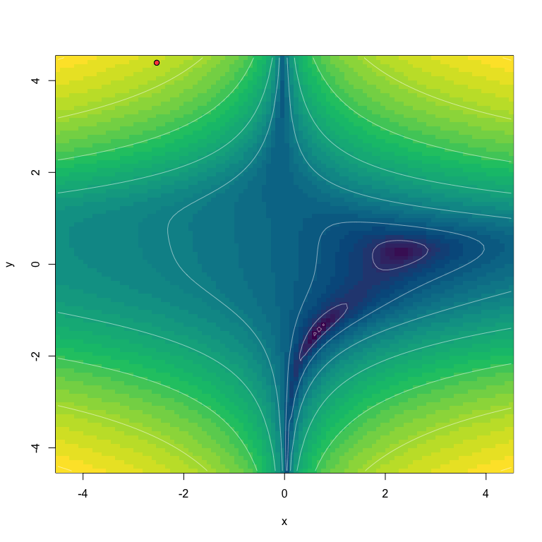

The torchopt package provides R implementation of deep learning optimizers proposed in the literature. It is intended to support the use of the torch package in R.
Provided optimizers
torchopt package provides the following R implementations of torch optimizers:
optim_adamw(): AdamW optimizer proposed by Loshchilov & Hutter (2019). Converted from thepytorchcode developed by Collin Donahue-Oponski available at https://gist.github.com/colllin/0b146b154c4351f9a40f741a28bff1e3optim_adabelief(): Adabelief optimizer proposed by Zhuang et al (2020). Converted from the authors’ PyTorch code: https://github.com/juntang-zhuang/Adabelief-Optimizer.optim_adabound(): Adabound optimizer proposed by Luo et al.(2019). Converted from the authors’ PyTorch code: https://github.com/Luolc/AdaBound.optim_adahessian(): Adahessian optimizer proposed by Luo et al.(2019). Converted from the authors’ PyTorch code: https://github.com/Luolc/AdaBound.optim_madgrad(): Momentumized, Adaptive, Dual Averaged Gradient Method for Stochastic Optimization (MADGRAD) optimizer proposed by Defazio & Jelassi (2021). The function is imported from madgrad package and the source code is available at https://github.com/mlverse/madgradoptim_nadam(): Incorporation of Nesterov Momentum into Adam proposed by Dozat (2016). Converted from the PyTorch site https://github.com/pytorch/pytorch.optim_qhadam(): Quasi-hyperbolic version of Adam proposed by Ma and Yarats(2019). Converted from the code developed by Meta AI: https://github.com/facebookresearch/qhoptim.optim_radam(): Rectified verison of Adam proposed by Liu et al. (2019). Converted from the PyTorch code https://github.com/pytorch/pytorch.optim_swats(): Optimizer that switches from Adam to SGD proposed by Keskar and Socher(2018). Converted from thepytorchcode developed by Patrik Purgai: https://github.com/Mrpatekful/swatsoptim_yogi(): Yogi optimizer proposed by Zaheer et al.(2019). Converted from thepytorchcode developed by Nikolay Novik: https://github.com/jettify/pytorch-optimizer
Optimization test functions
You can also test optimizers using optimization test functions provided by torchopt including "ackley", "beale", "booth", "bukin_n6", "easom", "goldstein_price", "himmelblau", "levi_n13", "matyas", "rastrigin", "rosenbrock", "sphere". Optimization functions are useful to evaluate characteristics of optimization algorithms, such as convergence rate, precision, robustness, and performance. These functions give an idea about the different situations that optimization algorithms can face.
In what follows, we perform tests using "beale" test function. To visualize an animated GIF, we set plot_each_step=TRUE and capture each step frame using gifski package.
optim_adamw():
# test optim adamw
set.seed(12345)
torchopt::test_optim(
optim = torchopt::optim_adamw,
test_fn = "beale",
opt_hparams = list(lr = 0.1),
steps = 500,
plot_each_step = TRUE
)
optim_adabelief():
set.seed(42)
test_optim(
optim = optim_adabelief,
opt_hparams = list(lr = 0.5),
steps = 400,
test_fn = "beale",
plot_each_step = TRUE
)
optim_adabound():
# set manual seed
set.seed(22)
test_optim(
optim = optim_adabound,
opt_hparams = list(lr = 0.5),
steps = 400,
test_fn = "beale",
plot_each_step = TRUE
)
optim_adahessian():
# set manual seed
set.seed(290356)
test_optim(
optim = optim_adahessian,
opt_hparams = list(lr = 0.2),
steps = 500,
test_fn = "beale",
plot_each_step = TRUE
)
optim_madgrad():
set.seed(256)
test_optim(
optim = optim_madgrad,
opt_hparams = list(lr = 0.05),
steps = 400,
test_fn = "beale",
plot_each_step = TRUE
)
optim_nadam():
set.seed(2903)
test_optim(
optim = optim_nadam,
opt_hparams = list(lr = 0.5, weight_decay = 0),
steps = 500,
test_fn = "beale",
plot_each_step = TRUE
)
optim_qhadam():
set.seed(1024)
test_optim(
optim = optim_qhadam,
opt_hparams = list(lr = 0.1),
steps = 500,
test_fn = "beale",
plot_each_step = TRUE
)
optim_radam():
set.seed(1024)
test_optim(
optim = optim_radam,
opt_hparams = list(lr = 1.0),
steps = 500,
test_fn = "beale",
plot_each_step = TRUE
)
optim_swats():
set.seed(234)
test_optim(
optim = optim_swats,
opt_hparams = list(lr = 0.5),
steps = 500,
test_fn = "beale",
plot_each_step = TRUE
)
optim_yogi():
# set manual seed
set.seed(66)
test_optim(
optim = optim_yogi,
opt_hparams = list(lr = 0.1),
steps = 500,
test_fn = "beale",
plot_each_step = TRUE
)
Acknowledgements
We are thankful to Collin Donahue-Oponski https://github.com/colllin, Amir Gholami https://github.com/amirgholami, Liangchen Luo https://github.com/Luolc, Liyuan Liu https://github.com/LiyuanLucasLiu, Nikolay Novik https://github.com/jettify, Patrik Purgai https://github.com/Mrpatekful Juntang Zhuang https://github.com/juntang-zhuang and the PyTorch team https://github.com/pytorch/pytorch for providing pytorch code for the optimizers implemented in this package. We also thank Daniel Falbel https://github.com/dfalbel for providing support for the R version of PyTorch.
Code of Conduct
The torchopt project is released with a Contributor Code of Conduct. By contributing to this project, you agree to abide by its terms.
References
ADABELIEF: Juntang Zhuang, Tommy Tang, Yifan Ding, Sekhar Tatikonda, Nicha Dvornek, Xenophon Papademetris, James S. Duncan. “Adabelief Optimizer: Adapting Stepsizes by the Belief in Observed Gradients”, 34th Conference on Neural Information Processing Systems (NeurIPS 2020), https://arxiv.org/abs/2010.07468.
ADABOUND: Liangchen Luo, Yuanhao Xiong, Yan Liu, Xu Sun, “Adaptive Gradient Methods with Dynamic Bound of Learning Rate”, International Conference on Learning Representations (ICLR), 2019. https://doi.org/10.48550/arXiv.1902.09843.
ADAHESSIAN: Zhewei Yao, Amir Gholami, Sheng Shen, Mustafa Mustafa, Kurt Keutzer, Michael W. Mahoney. “Adahessian: An Adaptive Second Order Optimizer for Machine Learning”, AAAI Conference on Artificial Intelligence, 35(12), 10665-10673, 2021. https://arxiv.org/abs/2006.00719.
ADAMW: Ilya Loshchilov, Frank Hutter, “Decoupled Weight Decay Regularization”, International Conference on Learning Representations (ICLR) 2019. https://doi.org/10.48550/arXiv.1711.05101.
MADGRAD: Aaron Defazio, Samy Jelassi, “Adaptivity without Compromise: A Momentumized, Adaptive, Dual Averaged Gradient Method for Stochastic Optimization”, arXiv preprint arXiv:2101.11075, 2021. https://doi.org/10.48550/arXiv.2101.11075
NADAM: Timothy Dazat, “Incorporating Nesterov Momentum into Adam”, International Conference on Learning Representations (ICLR), 2019. https://openreview.net/pdf/OM0jvwB8jIp57ZJjtNEZ.pdf
QHADAM: Jerry Ma, Denis Yarats, “Quasi-hyperbolic momentum and Adam for deep learning”. https://arxiv.org/abs/1810.06801
RADAM: Liyuan Liu, Haoming Jiang, Pengcheng He, Weizhu Chen, Xiaodong Liu, Jianfeng Gao, Jiawei Han, “On the Variance of the Adaptive Learning Rate and Beyond”, International Conference on Learning Representations (ICLR) 2020. https://arxiv.org/abs/1908.03265.
SWATS: Nitish Keskar, Richard Socher, “Improving Generalization Performance by Switching from Adam to SGD”. International Conference on Learning Representations (ICLR), 2018. https://arxiv.org/abs/1712.07628.
YOGI: Manzil Zaheer, Sashank Reddi, Devendra Sachan, Satyen Kale, Sanjiv Kumar, “Adaptive Methods for Nonconvex Optimization”, Advances in Neural Information Processing Systems 31 (NeurIPS 2018). https://papers.nips.cc/paper/8186-adaptive-methods-for-nonconvex-optimization